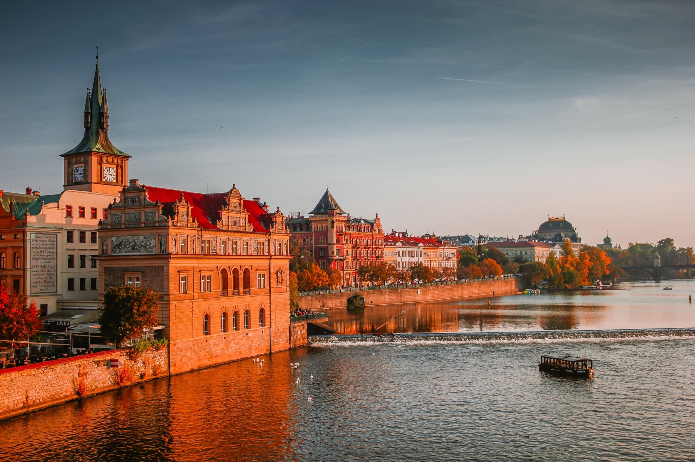

History
The city of Prague has had a glorious journey from being just a settlement in Vyšehrad to one of the most loved cities. We have documented this journey in great detail for you to understand and discover.
Food
Prague is one of Europe’s hottest travel destinations – and its sugary-based cuisine, in particular, keeps travellers coming back for more. Here you can find the best food in Prague that will please your tastebuds.
Festivals
There are plenty of festivals and events held throughout the year attracting thousands of visitors from inside and outside the country and the continent. Find more about the festivals and nightlife in Prague.